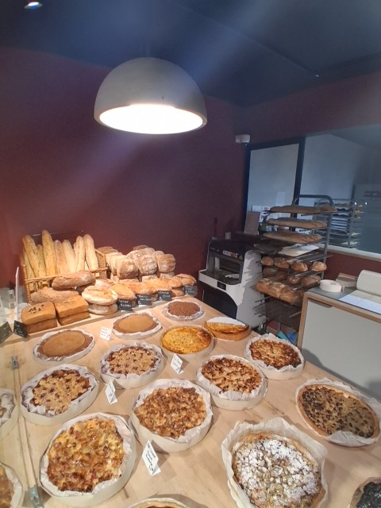
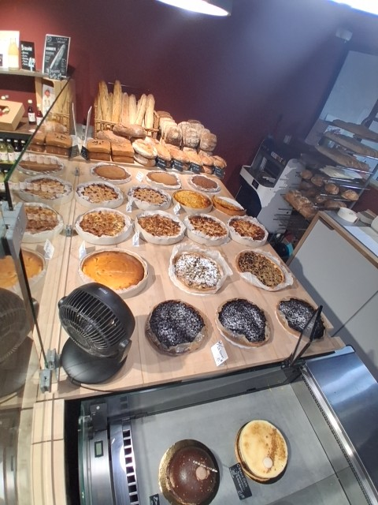
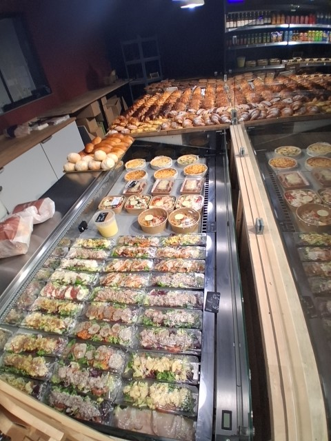
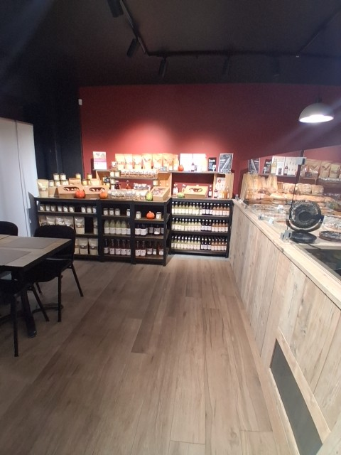
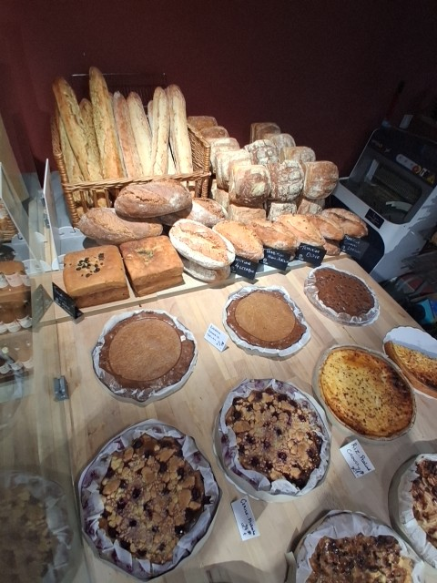
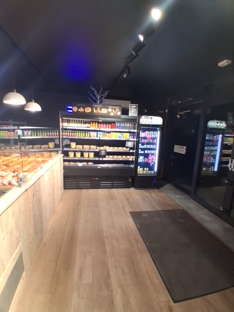

Franchisés · évaluation et suivi › Suivi des franchisés › Tableau de bord
Tableau de bord du suivi
Sur l’ordinateur : préparer les visites, adapter les rapports que la tablette renvoie, puis les envoyer aux franchisés. La visite elle-même se fait sur la tablette.
4 magasins · 3 consultants · visites, rapports et points relus à 08:20
Visites cette semaine43 à préparer · 1 prête sur la tablette
Rapports à adapter2Corbais à envoyer avant 17:12 (48 h)
Rapports envoyés · octobre65 lus par le franchisé · 1 pas encore
Points ouverts chez les franchisés82 P0 · 3 en retard
Corrections à valider2photos envoyées par les franchisés
Les visites, de la préparation à l’envoiune carte par visite · cliquez pour l’ouvrir
Une visite traverse quatre colonnes : le bureau prépare, la tablette visite, le bureau adapte le brouillon et l’envoie. Les délais viennent de « Qui fait quoi ».
À préparerordinateur3
Sur la tabletteen visite1
Pendant la visite, la carte montre l’avancement de la checklist. Hors ligne, elle se met à jour au retour du réseau.
Rapport à adapterordinateur2
Envoyéoctobre6
Les franchisésle feu, le dernier rapport, ce qui reste à travailler
Franchisé
Dernière visite
Dernier rapport
Points ouverts
Prochaine visite
Cadre d’octobre
Scoring Q3
HalleSam V. · P0 en retard
21/10 · production11 / 14 conformes
luenvoyé le 22/10
3 · 1 P01 photo à valider
27/10 · bilan Q3Sam V.
3 / 4hygiène le 30/10
15,8 / 20
GosseliesSam V.
23/10 · hygiène11 / 12 conformes
à adapterbrouillon du 23/10
2 · P1, P21 photo à valider
26/10 · suivi planSam V.
2 / 2
16,4 / 20
CorbaisNadia K.
22/10 · bilan Q39 / 10 conformes
à adapteravant 17:12
1 · P2
17/11 · régulièreNadia K.
1 / 1
17,2 / 20
SombreffeYoussef B. · visite due
15/10 · client mystère62 / 80
pas luenvoyé le 16/10
2 · 1 P0escaladé à Sam V.
28/10 · régulièreYoussef B.
0 / 1
13,5 / 20
Le feu reste celui du module Visites : P0 ouvert, note Google, planogramme, visite due. Le scoring se lit, il se calcule toujours dans « Scoring du trimestre ».
Repris de l’existant · le tableau des franchisés de la Fiche franchisé · Mon planning et Réseau de Gestion consultant · l’agenda et le portfolio de l’app Visites · la synthèse de Sam (/visites/synthese).
Halle · Bilan trimestriel · mardi 27/10 · 10:00 – 12:00 · Sam V.
Le dossier de visiteassemblé tout seul · rien à ressaisir
Chaque bloc est lu là où il vit. Coché, il part sur la tablette et s’affiche à l’étape « Dossier du bureau ».
Santé du magasinFiche franchisé · santé
CA d’octobre à 96 % du budget à date · part B2B 31 % (règle des 40 %) · invendus 3,8 % du CA · note Google 4,3, 12 avis en octobre · 2e du réseau au CA par heure.
Points ouvertsPlans d’action
P0 vitrine salée à 7 °C, ouvert le 21/10, en retard d’un jour · P1 comptoir viennoiserie, photo de correction à valider · P2 étiquettes de prix des tartes, à reprendre.
Tâches et contrôles photoTâches et contrôles photo
Octobre : 78 % des tâches rendues · obligatoires manquées 3 jours · 2 photos à noter.
Scoring du trimestreScoring du trimestre
Q3 : 15,8 / 20 (Q2 : 14,1) · rapport A4 envoyé le 01/10 · le bilan le présente au franchisé.
Client mystère et comptoirClient mystèreConformité du comptoir
MSP Q3 : 68 / 80 · planogramme tenu à 86 % · 2 obligatoires sans place au comptoir.
Dernière météo du franchiséFin de visite · météointerne
06/10 : moral 3 / 5 · demande « de l’aide pour recruter le week-end ». Reste entre le bureau et le consultant, jamais montré au franchisé.
Ce que la tablette emportera
Le type de visite donne la durée et la checklist. Le bureau ajoute ses points : ils apparaissent en tête de la checklist, marqués « demandé par le bureau ».
Type de visite120 min · checklist Bilan · 10 pointsCadre de visite
Points ajoutés par le bureau
Contrôler la vitrine salée sur place (P0 du 21/10)
Relire le P&L de septembre : food cost 40,3 %
Parler du recrutement du week-end (météo du 06/10)
Documents joints
📄 Scoring Q3 · A4📄 P&L septembre📄 Rapport du 21/10
Ordre du jour au franchisé
Envoyé tout seul le dimanche 25/10 à 8:00 (J−2) : l’heure, la durée, les 3 sujets du bureau, sans la météo.
La tablette garde le dossier hors ligne. Il se met à jour tout seul jusqu’au début de la visite.
Repris de l’existant · la Santé du magasin et le Benchmark réseau de la Fiche franchisé · les types de visite et leurs checklists du Cadre de visite · les tâches « avant » de Gestion consultant · le lien Google Agenda et l’invitation .ics à la planification.
Corbais · Bilan trimestriel · jeudi 22/10 · Sam V.
brouillon de la tablette · 22/10 17:12à envoyer avant 17:12 aujourd’hui
Le rapportécrit sur place, relu ici
La tablette a rempli chaque partie. On corrige le ton, on choisit les points et les photos qui partent, on garde le reste en interne.
En une phrase
Ce qui va bien
Vu sur place
Énergie de l’équipe 4 / 5Standards appliquésClients satisfaits
Le vrai problème
ApprovisionnementProductionÉquipePrix
Recommandation
Points à travailler
Part
Priorité
Point
Échéance
Qui
P1
Commande de pains spéciaux +15 %, du mercredi au samedi
29/10
franchisé
P2
Afficher l’objectif de la campagne de novembre en arrière-boutique
02/11
équipe
interne
Proposer Corbais comme magasin pilote pour la gamme d’hiverdécoché : reste au bureau
—
Sam V.
Photos · 3 sur 4 partent

comptoir · 94 %

tartes et quiches

vitrine salée

entrée · floue
Checklist du bilan : 9 / 10 conformes · le détail point par point est joint au PDF.
Ce que recevra Corbais
Rapport de visite · 22/10
Bilan trimestriel avec Sam V. · 9 / 10 conformes
Un trimestre solide : 17,2 / 20, le meilleur du réseau. Le pain manque en fin de journée.
2 points à travailler
P1Commande de pains spéciaux +15 % · 29/10
P2Objectif de campagne affiché · 02/11
+ 3 photos · ce qui va bien · la recommandation. Ni la météo, ni le point interne.
L’envoi
Àle gérant de Corbais · page du franchisé + courriel avec PDF
En copieNadia K., consultante responsable
Qui envoieSam V., le consultant de la visite Qui fait quoi
Délaireste 8 h 50 sur 48 h
Repris de l’existant · la review de fin de visite de l’app Visites (vu sur place, le vrai problème, recommandation) · le plan d’action P0 à P2 avec assigné et échéance · les photos de visite · la note VISIT écrite au panel à la clôture.
Corrections à valider2 photos envoyées par les franchisés
Le franchisé envoie sa photo depuis sa page. Accepter la valide ; le consultant la ferme sur place à la visite suivante.
P1Halle · comptoir viennoiserie à 72 %photo du 23/10 à 07:48
visite · 21/10correction · 23/10
« Rangée viennoiserie remise au plan, croissants devant. » — le franchisé
P2Gosselies · PLV de novembre poséephoto du 24/10 à 08:55
visite · 19/10

correction · 24/10
Tous les points ouverts8 · les plus urgents d’abord
Magasin · point
Échéance
État
P0
Sombreffe · 3 obligatoires absentes du comptoirclient mystère du 15/10
20/10retard 4 j
escaladé à Sam V.
P0
Halle · vitrine salée à 7 °Cproduction du 21/10
23/10retard 1 j
ouvert
P2
Halle · étiquettes de prix des tartesproduction du 21/10
22/10retard 2 j
à reprendre
P1
Halle · comptoir viennoiserie à 72 %
26/10
photo reçue
P1
Gosselies · recuisson de 15 h non faiterégulière du 19/10
27/10
ouvert
P2
Gosselies · PLV de novembre
28/10
photo reçue
P2
Corbais · fiche allergènes du comptoir à jour
30/10
ouvert
P2
Sombreffe · saluer chaque client à l’entréeclient mystère du 15/10
31/10
ouvert
Repris de l’existant · la vue admin « À valider » de l’app Visites (avant / photo du franchisé, Accepter / À reprendre) · la machine à états du plan d’action (ouvert, attente, validé, reprendre, fermé, escalade) · l’escalade à Sam.
Franchisés · évaluation et suivi › Suivi des franchisés › Visite sur tablette
Visite sur tablette
En magasin, tout se fait sur la tablette du consultant. Le dossier préparé au bureau arrive tout seul, la checklist se remplit sur place même sans réseau, et le brouillon du rapport repart au bureau à la fin.
L’écran ci-dessous est celui de la tablette, en cours de visite
Halle · Bilan trimestriel
mardi 27/10 · commencée à 10:04 · Sam V.
hors ligne · 4 en attente
La visite · 8 étapes
Arrivée · photo du jour
étape 1 / 8
Trois photos à l’arrivée, toujours les mêmes cadrages : on compare visite après visite.
entrée · 10:05

intérieur · 10:06
comptoir · 10:06
Dossier du bureau
préparé le 25/10 · étape 2 / 8
Les 3 points demandés par le bureau
Contrôler la vitrine salée (P0 du 21/10) · relire le P&L de septembre · parler du recrutement du week-end.
Santé
96 %
CA d’octobre / budget à date · B2B 31 %
Scoring Q3
15,8 / 20
Q2 : 14,1 · 2e du réseau
Points ouverts
3
1 P0 en retard · 1 photo à valider
Dernière météointerne
06/10 : moral 3 / 5 · « de l’aide pour recruter le week-end ».
Checklist · Bilan trimestriel
7 / 13 · étape 3 / 8
Demandé par le bureau3
Vitrine salée à moins de 4 °Cbureau · P0 du 21/10 · relevé : 6,5 °C
P&L de septembre relu avec le franchisébureau · food cost 40,3 %
Recrutement du week-end abordébureau · météo du 06/10
Scoring et objectifs4 / 5
Scoring Q3 présenté, poste par poste
Objectifs produits de novembre poséstartes 25 / jour, campagne de novembre
Plan de développement relu
Comptoir et assortiment1 / 5 · lu dans le cockpit
Planogramme tenu86 % d’après le cockpit · à confirmer à l’œil
Les 2 obligatoires sans place sont au comptoir
Contrôles photo du jour
ce que l’équipe a rendu depuis 6:30 · étape 4 / 8
07:12 · comptoir · tenue
07:40 · tartes · à noter
08:05 · vitrine salée · à noter
09:30 · tartes · tenue
Lecture seule : la note se pose toujours dans le panel.
Vu sur place
étape 5 / 8
Énergie de l’équipe
Le vrai problème
ProductionÉquipeÉquipementAccueilPrix
Recommandation
Points à travailler
proposés d’après les non-conformes · étape 6 / 8
P0Changer le joint de la vitrine saléeéchéance 29/10 · franchisé
remplace le P0 du 21/10 · photo de correction demandée
P1Placer les 2 obligatoires au comptoiréchéance 03/11 · équipe
Météo du franchisé
interneétape 7 / 8
Comment il se sent. Reste entre le consultant et le bureau ; chaque demande devient une tâche du consultant à J+7.
Moral
Climat de l’équipe
Ses demandes
Fin de visite
étape 8 / 8
Checklist
11 / 13
2 non conformes
Points proposés
2
1 P0 · 1 P1
Photos
9
partent à la synchro
Le franchisé a vu le résumé · signature
Le circuit d’une visitece qui se fait où
1OrdinateurPréparerle dossier s’assemble, le bureau ajoute ses points, l’ordre du jour part à J−2
2TabletteVisiterphoto du jour, checklist du type, vu sur place, points, météo, signature
3OrdinateurAdapter et envoyerle brouillon est relu, les points et photos choisis, envoyé sous 48 h
4Page du franchiséTravailler ses pointsil lit son rapport et envoie la photo de chaque correction
5OrdinateurValideraccepter la photo, ou « à reprendre » avec un nouveau délai
6TabletteFermer sur placeà la visite suivante, le consultant confirme et ferme le point
Repris de l’existant · l’app Visites (PWA visites/ : agenda, fiche, checklist par modules, photos, review, plan d’action, file hors ligne avec client_id) · la Fiche franchisé en mode tablette (?app=consultant : agenda, checklist du consultant, santé, benchmark, météo) · les contrôles en photo dans le contrôle guidé. Les deux applications n’en font plus qu’une.
Franchisés · évaluation et suivi › Suivi des franchisés › Client mystère
Client mystère
Tout le client mystère au même endroit : les rapports magasin par magasin, l’encodage du rapport reçu, les points qui en sortent et le contrôle sur place à la visite suivante.
un seul encodage · le scoring, le feu, la tablette et le franchisé le lisent
Derniers rapports reçus : Sombreffe le 15/10 · Q4 : 3 passages encore attendus en décembre
Rubrique en alerte1Sombreffe · accueil 11 / 20 (seuil 12)
Points issus du client mystère2ouverts · 1 P0 · Sombreffe
Relevés corrigés sur place3 / 4contrôlés à la visite suivante
Les rapports, magasin par magasinle dernier passage, ses rubriques sur 20, ce qui a suivi
Magasin
Dernier passage
Note
Accueil
Produits
Hygiène
Ambiance
Précédent
Ce qui a suivi
Rapport
SombreffeYoussef B.
15/10 · Q4envoyé le 16/10 · pas lu
62 / 803,9 / 5
11
14
18
19
66−4 · Q3
2 points ouverts, 1 P0contrôle à la visite du 28/10
HalleSam V.
15/09 · Q3lu le 16/09
68 / 804,3 / 5
16
18
17
17
61+7 · Q2
3 relevés, 2 corrigésvisite du 06/10 · ambiance sonore à revoir
GosseliesSam V.
22/09 · Q3lu le 22/09
71 / 804,4 / 5
18
18
17
18
70+1 · Q2
1 relevé, corrigévisite du 19/10
CorbaisNadia K.
18/09 · Q3lu le 19/09
74 / 804,6 / 5
19
19
18
18
72+2 · Q2
rien à reprendre
Une rubrique sous 12 / 20 met le feu du magasin au rouge (seuil réglable). La note sur 5 est celle du poste Client mystère du scoring du trimestre.
Encoder un rapportSombreffe · passage du 15/10
Le rapport arrive en PDF de l’agence. On encode la note et les rubriques une seule fois ; tout le reste se remplit tout seul.
Magasin et trimestrepassage le 15/10
Note obtenue sur soit 3,9 / 5 au scoring
Rubriques, sur 20Accueil Produits Hygiène Ambiance
Ce que l’agence relève
Le rapport PDF📄 MSP-Sombreffe-2026-10-15.pdf · 1,2 Mo
Ce qui suit l’encodage
Créer les points à travailler : P0 3 obligatoires absentes du comptoir · P2 saluer chaque client à l’entrée
Ajouter le contrôle à la prochaine visite (28/10, Youssef B.) : les 3 questions du client mystère dans la checklist
Montrer le rapport et la note au franchisé, dans sa page
Planifier une visite « Client mystère » à part (45 min, Opérations et qualité)
Où il se lit ensuite
→ Scoring du trimestre : le poste Client mystère (sur 5), un des quatre postes
→ Feu du magasin : rouge si une rubrique passe sous 12 / 20
→ Dossier de visite : la note, les rubriques et les relevés, au tableau de bord
→ Tablette : les questions de contrôle à la visite suivante
→ Page du franchisé : son rapport, ses points
Le contrôle sur la tablette
À la visite qui suit un passage, le module Client mystère de la checklist demande si le relevé est corrigé.
1Hygiène : ce que le rapport a relevé est corrigé
2Accueil : conforme au rapport
3Ambiance : bruit, musique, propreté visible
Le type de visite « Client mystère » (45 min, 8 points) reste disponible pour un contrôle à part.
Repris de l’existant · Scoring du trimestre › Client mystère (encodage obtenu / maximum, rubriques, commentaire, PDF : /scoring/msp, ceo_scoring_msp) · le rapport client mystère de l’app Visites (POST /msp, ceo_msp, rubrique sous 12 / 20 au feu) · le module Client mystère de la checklist · le type de visite Client mystère · l’entrée Suivi de terrain › Client mystère. Les deux encodages n’en font plus qu’un.
Franchisés · évaluation et suivi › Suivi des franchisés › Page du franchisé
Page du franchisé
Ce que le franchisé voit avec son lien : ses rapports de visite et les points qu’il doit travailler. Il envoie la photo de chaque correction d’ici.
Lien de Halle :…/cockpit/suivi/?shop=4&jeton=7f3a…
Halle · Mon suivi
mis à jour à 08:20
HA
À travailler
3 points
1 urgent, en retard
Prochaine visite
mar 27/10
10:00 · bilan du trimestre avec Sam V.
Dernier rapport
21/10
production · 11 / 14
Mes points à travailler
urgentVitrine salée à 7 °Céchéance 23/10 · en retard d’un jour
Ce que Youssef a vu le 21/10 : la vitrine salée affichait 7 °C à 11 h ; elle doit rester sous 4 °C.
ou un mot si ce n’est pas une photo
importantComptoir viennoiserie remis au planphoto envoyée le 23/10 · en attente
Le bureau valide votre photo ; le consultant confirme sur place à la prochaine visite.
à faireÉtiquettes de prix des tartesà reprendre
Retour du bureau, 23/10 : la photo ne montre pas la deuxième rangée. Nouvelle échéance le 26/10.
Validés ce mois : 2 · PLV d’octobre, fiche allergènes.
✕ les points décochés au bureau, marqués « interne »
✕ le dossier de préparation et les notes du consultant
✕ les autres magasins
Ce qui revient au bureau
→ sa photo de correction : dans Points et corrections, à valider
→ un rapport ouvert : il passe à « lu » dans le tableau de bord
→ un rapport pas lu après 3 jours : relance par courriel
Repris de l’existant · la vue franchisé de l’app Visites (?shop= : mon plan d’action, photo de correction, ma boutique) · la page du franchisé dashboard/suivi.html?shop= (ce qu’il a à faire, sur place, le journal). Les deux pages n’en font plus qu’une.
Franchisés · évaluation et suivi › Suivi des franchisés › Qui fait quoi
Qui fait quoi
La page admin du suivi. Par magasin : qui prépare, qui visite, qui adapte le rapport, qui l’envoie, qui valide les corrections. Comme pour les primes, tout se règle ici ; le tableau de bord et la tablette appliquent.
Corrections validéesen 14 hen moyenne · règle : 24 h
Par magasinune ligne par franchisé
« Selon le type » : le type de visite dit quel profil la fait (le Cadre de visite). « Le consultant de la visite » : celui qui l’a faite.
Magasin
Visites au cadre
Prépare
Visite
Adapte le rapport
Valide l’envoi
Valide les corrections
En copie
Halleresponsable Sam V.
4 / mois2 régulières, production, hygiène · bilan / trim.
Youssef B., Nadia K.
Gosseliesresponsable Sam V.
2 / moisrégulière, hygiène · bilan / trim.
Nadia K.
Corbaisresponsable Nadia K.
1 / moisrégulière · client mystère et bilan / trim.
Sam V.
Sombrefferesponsable Youssef B.
1 / moisrégulière · client mystère et bilan / trim.
Youssef n’envoie pas seul
Nadia K.
Les personnes et leurs droits
Ce que chacun peut faire, partout où il intervient.
Personne
Préparer
Visiter
Adapter
Envoyer
Valider
Régler
Sam V.Stratégie et Développement
Nadia K.Opérations et qualité
Youssef B.Produit et production
Lucie D.Admin réseau, au bureau
Chaque franchisépar son lien
lit ses rapports, envoie ses photos de correction
Règles et délais
Les délais pilotent les couleurs du tableau de bord et les relances.
Dossier de visite prêt jours avant la visite
Ordre du jour au franchisé
Rapport envoyé sous h après la fin de la visite
Rapport pas adapté à temps
Délai d’un pointP0 j · P1 j · P2 j
Photo de correction validée sous h
Escalade à Sam V.P0 en retard de plus de jours
Le franchisé voitjamais : la météo, les points internes
Les règles sont datées : une visite suit celles en vigueur le jour où elle est planifiée.
Repris de l’existant · le Cadre de visite de Gestion consultant (types, nombre par mois, profil, checklist, consultant) · l’affectation consultant ↔ magasins · les rôles consultant, franchisé, admin de l’app Visites · les réglages viFrequence, viChecklist et les seuils du feu. Mis en page comme les Paramètres des primes.